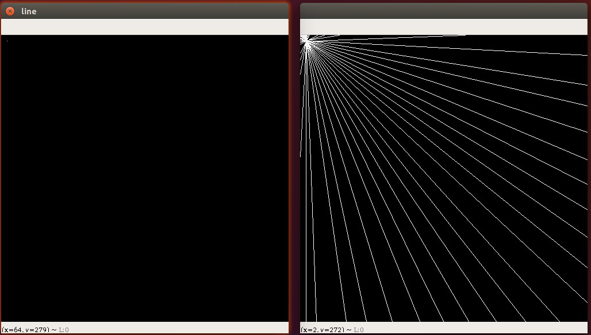
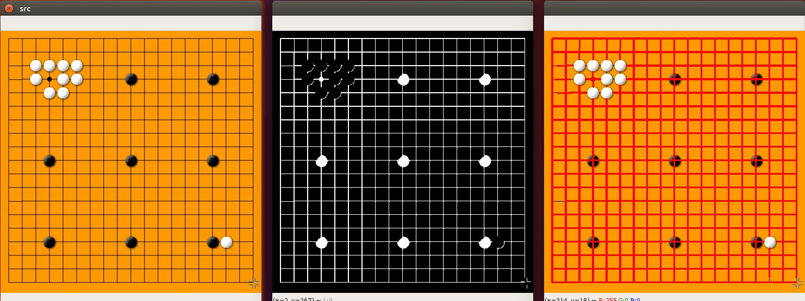
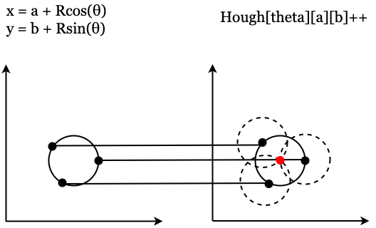
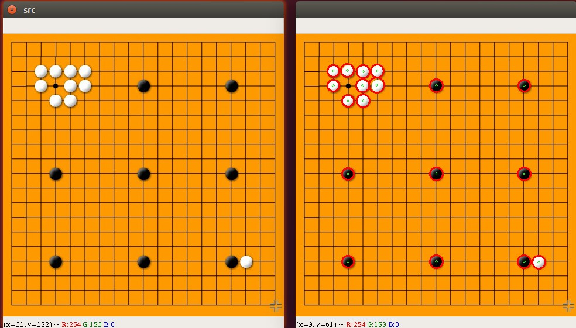

霍夫变换
霍夫直线变换
霍夫直线变换(Hough Line Transform)用来做直线检测
霍夫直线变换官网文档


为了加升大家对霍夫直线的理解,我在左图左上角大了一个点,然后在右图中绘制出来经过这点可能的所有直线

绘制经过某点的所有直线的示例代码如下,这个代码可以直接拷贝运行
1
2
3
4
5
6
7
8
9
10
11
12
13
14
15
16
17
18
19
20
21
22
23
24
25
26
27
28
29
30
31
32
33
34
35
36
37
38
39
40
41
42 | import cv2 as cv
import matplotlib.pyplot as plt
import numpy as np
def draw_line():
# 绘制一张黑图
img = np.zeros((500, 500, 1), np.uint8)
# 绘制一个点
cv.line(img, (10, 10), (10, 10), (255), 1)
cv.imshow("line",img)
return img
def hough_lines(img):
rho = 1;
theta = np.pi/180
threshold=0
lines = cv.HoughLines(img,rho, theta, threshold)
dst_img = img.copy()
for line in lines[:,0]:
rho,theta = line
a = np.cos(theta)
b = np.sin(theta)
x = a*rho
y=b*rho
x1 = int(np.round(x + 1000*(-b)))
y1 = int(np.round(y + 1000*a))
x2 = int(np.round(x - 1000*(-b)))
y2 = int(np.round(y - 1000*a))
cv.line(dst_img,(x1,y1),(x2,y2),(255,0,0),1)
cv.imshow("li",dst_img)
img = draw_line()
hough_lines(img)
cv.waitKey(0)
cv.destroyAllWindows()
|
练习：寻找棋盘中的直线

示例代码如下:
1
2
3
4
5
6
7
8
9
10
11
12
13
14
15
16
17
18
19
20
21
22
23
24
25
26
27
28
29
30
31
32
33
34
35
36
37
38
39 | import cv2 as cv
import matplotlib.pyplot as plt
import numpy as np
# 1. 将图片以灰度的方式读取进来
img = cv.imread("assets/weiqi.jpg", cv.IMREAD_COLOR)
cv.imshow("src",img)
gray_img = cv.cvtColor(img,cv.COLOR_BGR2GRAY)
# cv.imshow("gray",gray_img)
#
flag,thresh_img = cv.threshold(gray_img,100,255,cv.THRESH_BINARY_INV)
cv.imshow("thresh_img",thresh_img)
# 3. 霍夫变换
# 线段以像素为单位的距离精度，double类型的，推荐用1.0
rho = 1
# 线段以弧度为单位的角度精度，推荐用numpy.pi/180
theta = np.pi/180
# 累加平面的阈值参数，int类型，超过设定阈值才被检测出线段，值越大，基本上意味着检出的线段越长，检出的线段个数越少。
threshold=10
# 线段以像素为单位的最小长度
min_line_length=25
# 同一方向上两条线段判定为一条线段的最大允许间隔（断裂），超过了设定值，则把两条线段当成一条线段，值越大，允许线段上的断裂越大，越有可能检出潜在的直线段
max_line_gap = 3
lines = cv.HoughLinesP(thresh_img,rho,theta,threshold,minLineLength=min_line_length,maxLineGap=max_line_gap)
dst_img = img.copy()
for line in lines:
x1,y1,x2,y2 = line[0]
cv.line(dst_img,(x1,y1),(x2,y2),(0,0,255),2)
cv.imshow("dst img",dst_img)
cv.waitKey(0)
cv.destroyAllWindows()
|
霍夫圆
一个圆可以由以下公式表示
(x - x_0)^2 + (y - y_0)^2=r^2
，其中
是圆心,r是半径。圆环需要3个参数来确定，所以进行圆环检测的累加器必须是三维的，这样效率就会很低，因此OpenCV使用了霍夫梯度法这个巧妙的方法，来使用边界的梯度信息，从而提升计算的效率。
使用步骤：
- 霍夫圆检测对噪声敏感，先对对象做中值滤波
- 检测边缘，先把可能的圆边缘过滤出来
- 根据边缘得到最大概率的圆心，进而得到最佳半径

OpenCV的Logo检测结果：

1
2
3
4
5
6
7
8
9
10
11
12
13
14
15
16
17
18
19
20
21
22
23
24
25
26
27
28
29
30
31
32
33
34
35
36
37
38
39
40
41
42
43
44 | def hough_circle(img):
img_copy = img.copy()
# 中值滤波降噪
img_copy = cv2.GaussianBlur(img_copy, (3,3), 0)
img_copy = cv2.medianBlur(img_copy, 5)
gray = cv2.cvtColor(img_copy, cv2.COLOR_BGR2GRAY)
cv2.imshow("gray", gray)
"""
@param 8-bit 单通道图片
@param method 检测方法, 当前只有cv2.HOUGH_GRADIENT
@param dp 累加器分辨率和图像分辨率的反比例, 例如:
如果 dp=1 累加器和输入图像分辨率相同.
如果 dp=2 累加器宽高各为输入图像宽高的一半相同.
@param minDist 检测到圆的圆心之间的最小距离。
如果参数太小，除了真实的一个之外，可能错误地检测到多个相邻的圆圈。
如果参数太大，可能会遗漏一些圆
@param param1 参数1。它是两个传递给Canny边缘检测器的较高阈值（较低的阈值是此值的一半）
@param param2 参数2, 它是检测阶段圆心的累加器阈值。
它越小，会检测到更多的假圆圈。较大累加器值对应的圆圈将首先返回。
@param minRadius 最小圆半径.
@param maxRadius 最大圆半径.
如果<=0, 会使用图片最大像素值
如果< 0, 直接返回圆心, 不计算半径
"""
# ../images/coins.jpg
circles = cv2.HoughCircles(gray, cv2.HOUGH_GRADIENT,
dp = 1,
minDist = 50,
param1=160,
param2=50,
minRadius=0,
maxRadius=100)
circles = np.uint16(np.around(circles))
for i in circles[0, :]:
# draw the outer circle
cv2.circle(img_copy, (i[0], i[1]), i[2], (0, 255, 0), 2)
# draw the center of the circle
cv2.circle(img_copy, (i[0], i[1]), 2, (0, 0, 255), 3)
cv2.imshow("detected circles", img_copy)
|
寻找棋盘中的棋子

1
2
3
4
5
6
7
8
9
10
11
12
13
14
15
16
17
18
19
20
21
22
23
24
25
26
27
28
29
30
31
32
33
34
35
36
37
38
39 | import cv2 as cv
import numpy as np
img = cv.imread("assets/weiqi.jpg", cv.IMREAD_COLOR)
cv.imshow("src",img)
# 将图片转成灰色图片
gray_img = cv.cvtColor(img,cv.COLOR_BGR2GRAY)
# 霍夫圆形检测
def hough_circle(gray_img):
# 定义检测图像中圆的方法。目前唯一实现的方法是cv2.HOUGH_GRADIENT
method = cv.HOUGH_GRADIENT
# 累加器分辨率与图像分辨率的反比。例如，如果dp = 1，则累加器具有与输入图像相同的分辨率。如果dp = 2，则累加器的宽度和高度都是一半。
dp = 1
# 检测到的圆的圆心之间最小距离。如果minDist太小，则可能导致检测到多个相邻的圆。如果minDist太大，则可能导致很多圆检测不到。
minDist = 20
# param1 Canny算法阈值上线
# param2 cv2.HOUGH_GRADIENT方法的累加器阈值。阈值越小，检测到的圈子越多。
# minRadius : 最小的半径，如果不确定，则不指定
# maxRadius : 最大的半径，若不确定，则不指定
circles = cv.HoughCircles(gray_img,method,dp,minDist=minDist,param1=70,param2=30,minRadius=0,maxRadius=20)
for circle in circles[0,:]:
# 圆心坐标，半径
x,y,r = circle
# 绘制圆心
cv.circle(img,(x,y),2,(0,255,0),1)
# 绘制圆形
cv.circle(img,(x,y),r,(0,0,255),2)
cv.imshow("result",img)
# 调用函数，寻找霍夫圆
hough_circle(gray_img)
cv.waitKey(0)
cv.destroyAllWindows()
|